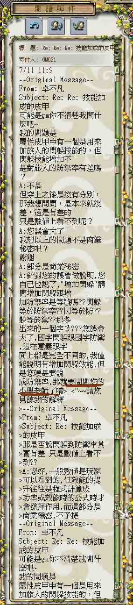

GM使用言語不當 ?? |
提供者 : 卓不凡
備註 : 話說我昨天去找一個朋友
去試試看一件＋５閃躲的皮甲去看看有沒有防禦率加成
之前問過ＧＭ０２２，不過因為太晚了所以我去睡了
ＧＭ０２２的回答是大約說那些技能元控一樣
不會顯示，所以我就有一個疑問，是有加防禦率但沒
顯示，還是沒有加防禦率呢？
我今早就去問問ＧＭ看∼
你猜猜ＧＭ０２１如何回答？？
他說國字「防禦率」跟國字「閃躲」的的意思是不同的
所以加「閃躲」不等於加「防禦率」
更甚者，他叫我去問問我的『小學老師』有關兩字的意思！
在下是一名大專生（香港）以上言論絕對是一個侮辱
有玩過旅人的都知到閃躲一升級防禦率也會增加
之前有大大說過他的公式（不過我忘了）大約就是
閃躲級數越高於人物等級人身對敏捷的防禦率加成也就會
越高，反之亦言
他本身是ＧＭ對於者點他不知道我不怪他，可是他把問題
的問題說是成一個『商業秘密』？？
以上是一個ＧＭ應有的態度嗎？
我本來是問皮甲增加的閃躲是有加防禦率但沒顯示，還是
沒有加防禦率呢？
他就硬要說我硬說是加閃躲等於加防禦率
在旅人系的防禦率計算中閃躲是其中一個常數
防禦率會為閃躲增加而增加，也會因其減少而減少
有錯嗎？ Ａ＋Ｂ＝Ｃ Ｃ不等於Ａ＋Ｂ？
無言……
( 遊戲基地的發言 )
標題：<其他>GM021←白吃嗎？
作者： G (想放棄的卓不凡)
日期：2003 / 7 / 11 13:08
|
| |